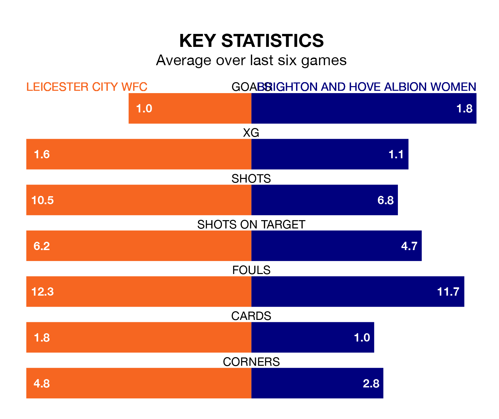

Leicester City WFC host Brighton and Hove Albion Women on Sunday at the King Power Stadium in the FA Women's Super League.
In their last league match, on March 17, Leicester City WFC lost to Tottenham Hotspur Women 1-0 away.
Brighton & Hove Albion also lost, 4-1 at home against Manchester City Women, with Geum-Min Lee scoring their goals.
In Elisabeth Terland, Brighton & Hove Albion have one of the league's sharpest shooters so far this season. She has notched 11 goals in 16 appearances, to sit third in the scoring charts.
Her goal rate of one every 115 minutes is much quicker than that of Jutta Rantala, Leicester City WFC's top scorer with a goal every 245 minutes, and a total of five goals in 16 games.
The Seagulls are 10th in the table after 16 games, of which they have won four and drawn two, earning 14 points.
The home side are two places ahead of the visitors in eighth, with four wins and four draws putting them on 16 points.
With 21 goals in 16 games so far this season, Leicester City WFC are scoring at below the league average rate with 1.3 goals per game. And they are conceding more than average, letting in 31 goals at a rate of 1.9 per game.
Brighton & Hove Albion are also below average scorers, with 1.3 goals per game, compared to a league average of 1.7. They have conceded 2.3 goals per game.
Leicester City WFC are in disappointing form in the FA Women's Super League, with two wins and four losses from their last six games.
And also with two wins and four losses over that period, Brighton & Hove Albion's form is identical – they have both taken six points from 18.
In the last five years, Leicester City WFC and Brighton & Hove Albion have played each other on five occasions. Leicester City WFC won three of them, Brighton & Hove Albion one, and they drew once.
On average, Leicester City WFC scored 1.4 goals and the Seagulls 0.6 in those matches.
Their last meeting was on December 10, when they played out a 2-2 draw.
Sunday's match will be refereed by Cheryl Foster, who has taken charge of four FA Women's Super League games so far this season, issuing one red card and booking eight players. She has awarded one penalty.
The last Leicester City WFC game Foster refereed was a 1-0 away win against Everton Women on January 28. She is yet to oversee a match featuring Brighton & Hove Albion this season.
Updated: 10:19 (UTC), 22/03/24